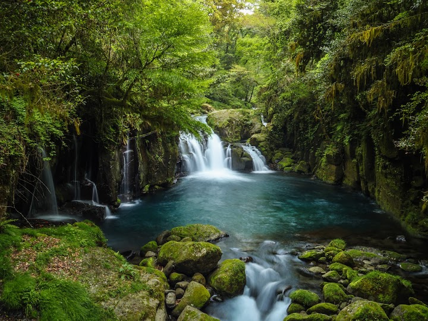
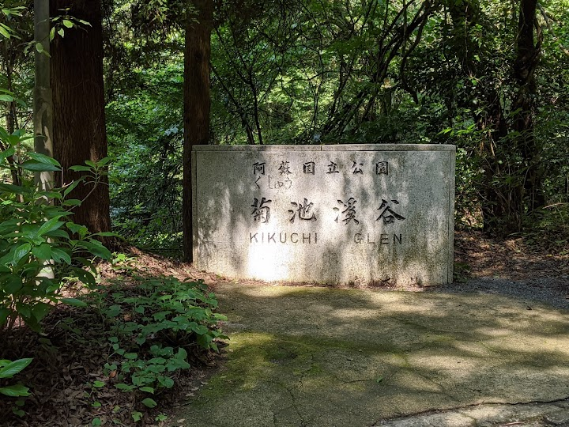
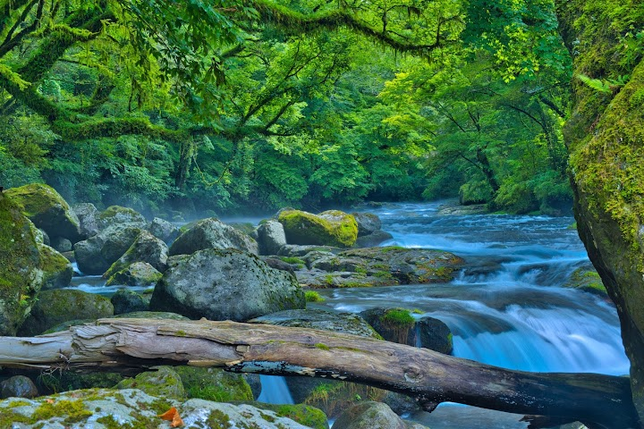
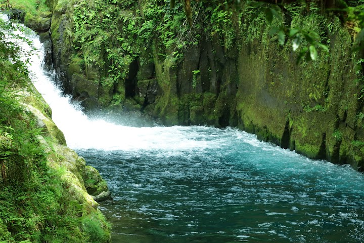
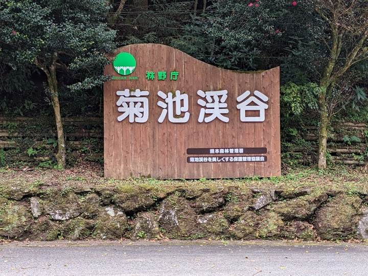

Kikuchi Gorge
Kikuchi Gorge is a peaceful, forested valley with a river, several waterfalls and nature trails, popular for its cool air and autumn colour. Parking is reported to be free, with an entrance fee of about 500 yen per person (check the current price); allow time for a hike of an hour or two.
Open in Google Maps (street view, more photos and reviews there)






Visitor tips on finding it and getting there
This was a beautiful hike with 4 different waterfalls. The parking is free but the entrance fee is ¥500 per person. That helps with maintenance. Be aware, if you are looking for a swimming hole, this is not it. They have a strict no swimming rule posted in many places. We did see people dipping their toes in the water though. Beautiful easy hike!
It costs ¥500 to enter. About 2km of walking total, it is natural ground going in and paved road on the way back. You can look at the pictures of the gorge below and judge yourself if it’s worth it or not! (if you like nature then I fully recommend it) Parking lot is down the road from the visitor center. There are souvenirs in the visitor center.
It was a very rainy day and the park wasn’t entirely open probably due to it being off-season but the staff at the ticket booth and the cafeteria were really hospitable and friendly which really made up for the lack of sunshine that day. Charming place to visit regardless.